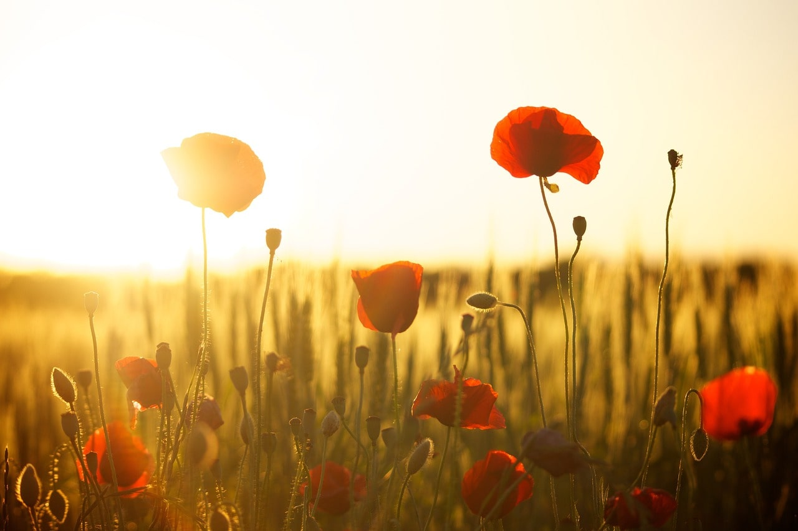
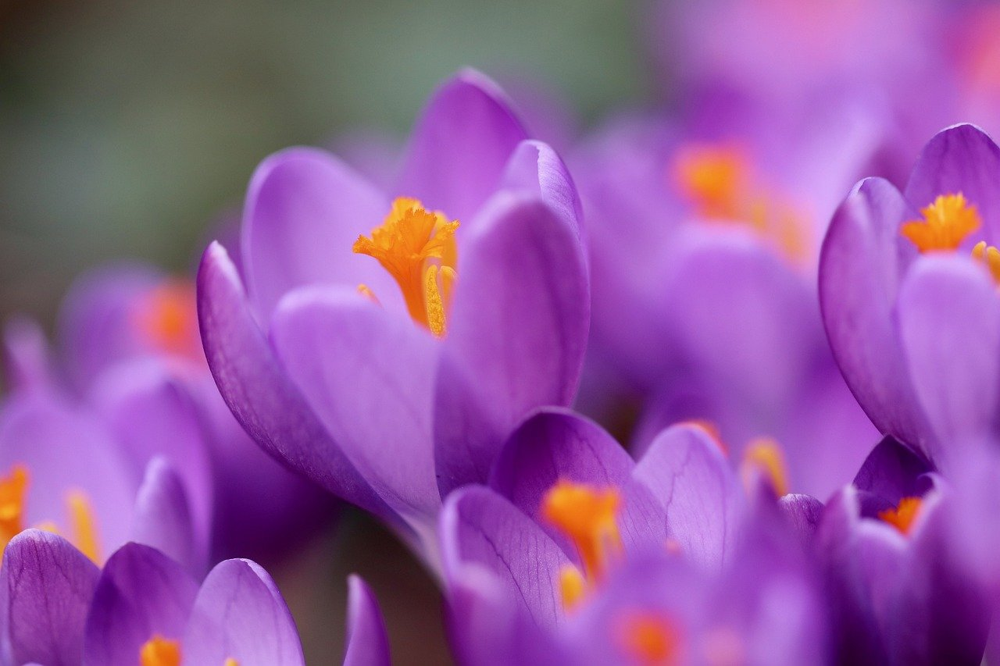

Um lindo campo de papoulas vermelhas floresce sob o dourado do entardecer, nos arredores de Fluorescência. Surgido por acaso, este belo cenário é agora bem cuidado pelos moradores, que zelam por sua beleza e preservação.
Nos campos dourados de Campópolis, um mar de papoulas e centáurias floresce sob os cuidados dos moradores de Fortaleza Nascente. Este cenário natural, acariciado pela brisa e pelo sol, atrai viajantes e pintores em busca de inspiração. A vibrante sinfonia de cores reflete a paixão local pela vida e convida à contemplação da beleza efêmera da natureza.
Na pacata vila de Larmelho, nos arredores de Culinópolis, os campos se tingem de púrpura e dourado quando os delicados açafrões florescem. Seu perfume adocicado se mistura ao ar fresco da primavera, anunciando a colheita do precioso tempero, ouro vermelho, que há séculos está em várias cozinhas e dá um sabor especial às receitas.
